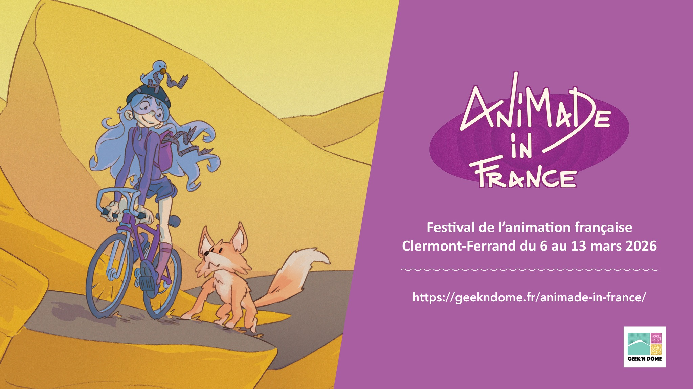
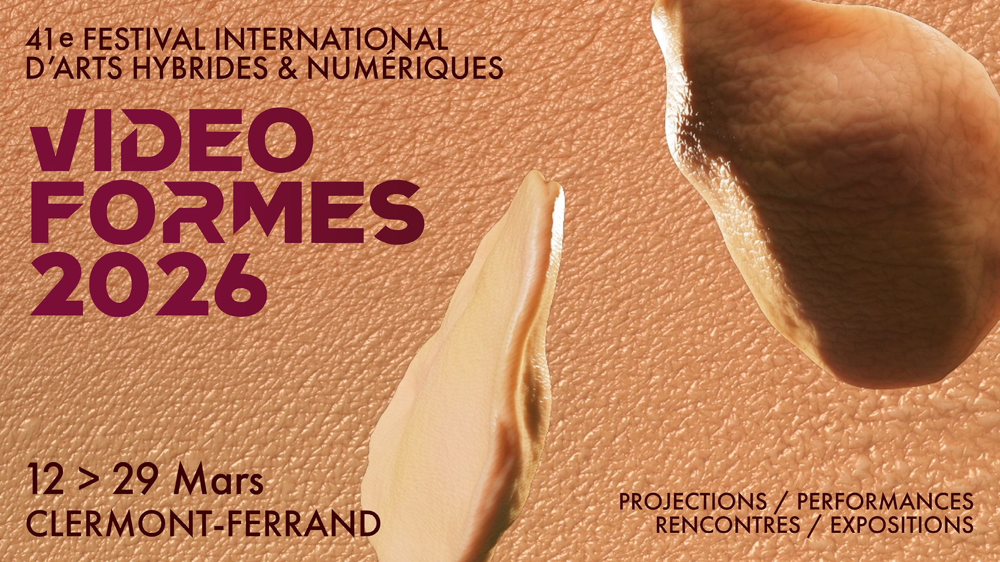
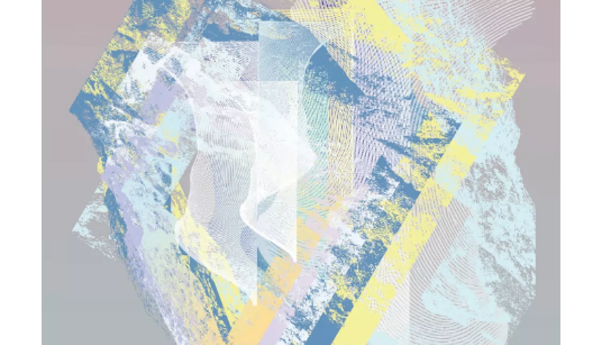
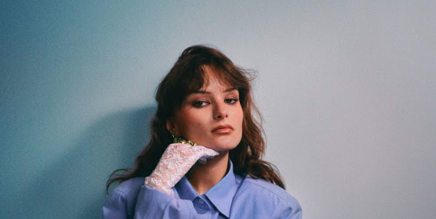

📅 Newsletter – Mars 2026
31 mars 2026
Et voici cette deuxième Newsletter Culturelle (va vraiment falloir lui trouver un autre nom parce que là...).
En tout cas, moi, je suis super contente de vous repartager une nouvelle fois mes découvertes culturelles mais aussi les sorties que nous allons faire.
Je vais essayer de ne pas trop épiloguer — contrairement à celle de février 2026 que je vous invite évidemment à aller consulter.
Le mois de mars 2026 va lui aussi être rempli mais peut-être un peu moins en semaine — car je reprends les cours — mais en tout cas si mon
état de santé me le permet nous allons essayer de faire un MAXIMUM de choses les week-end.
Promis cette description ne sera pas longue, juste pour vous prévenir à l'avance, il y a deux grands événements qui vont se dérouler pendant ce mois. Déjà début mars 2026,
on aura le droit à l'incroyable festival clermontois d'animation ANIMADE IN FRANCE — 06.03.2026 — 13.03.206 (il n'y aura pas le lien des programmes & des sites en introduction — je vais les mettre
au moment des descriptions des événements) & croyez moi que cette année je vais essayer d'en profiter le plus possible, parce que c'est univers trop chouette avec des personnes qui aiment
partager ce qui les font kiffer. Sinon l'autre grand évenement — que je pense suivre avec moins d'assiduité — c'est la 41ème édition du festival VIDEOFORMES — un festival d'arts vidéos & cultures numériques qui prendra place au niveau des rencontres
du 12.03.2026 — 15.03.26 & au niveau des expositions du 12.03.2025 — 29.03.2026.
Je vous en parle plus en détail au moment opportun. Sinon à part ça, le programme sera chargé de visites de musées, d'expositions, de séances de cinéma ou de toute autre chose qui me fera du bien.
Bref, fini pour cette introduction mais comme toutes celles que je vais faire je voulais m'excuser pour les différentes fautes que ça soit orthographiques ou syntaxiques & aussi — je ne m'arrête jamais
de m'excuser — pour les différentes incohérences du style des fois je mets les dates en gras puis une autre fois en soulignée, je ne me souviens jamais des codes que je me suis fixée. & aussi pour le fait
que des fois le texte est juste sous les images & que des fois il y ai un espace... pour le coup je n'y suis pas pour grand chose.
🍿 L'ÉVENT DU MOIS #1 — Festival ANIMADE IN FRANCE
— par l'association Geek'n Dôme

L'année dernière je n'avais fait qu'un seul événemement de ce festival : la séance entière de la série SAMUEL — Émilie TRONCHE (2024) au Lieu-Dit (🤍).
Je m'en étais voulu de ne pas m'être intéressée plus que cela au reste de la programmation car il y avait une rétrospctive entière sur Michel OCELOT (entre autre : Kirikou & la sorcière, Azur & Asmar...)
avec sa présence pour plusieurs projections. Surtout qu'en cérémonie de clôture c'était le film LE SOMMET DES DIEUX — Patrick IMBERT (2021) qui avait été passé. J'ai
vraiment regretté amèrement de ne pas avoir pris la peine de plus me renseigner sur cette deuxième édition. Alors pour la troisème, je me suis mise en tête de faire le plus de séances possbiles (mais comme
dirait mon copain sans se mettre la pression). D'ailleurs en me baladant sur le site je viens de me rendre compte que pour la première édition (2024), il y avait eu une rencontre & projection avec Ulysse MALASSAGNE qui a écrit la bande-dessinée (2017 — 2019) &
qui a réalisé la série d'animation LE COLLÈGE NOIR (2023) — qui est sûrement ma série d'animation préférée juste après GRAVITY FALLS — Alex HIRSCH (2012 — 2016).
Donc, cette année, je me suis pas mal renseignée sur le programme. Je ne vais pas m'amuser à tout écrire alors je vous mets juste en dessous le programme de cette année & après je vous mets les liens ⤵️
- CYCLE JACQUES-RÉMY GIRERD du 6 au 8 mars – cinémas CGR Le Paris et Les Ambiances Soirée d’ouverture du festival avec la projection de La Prophétie des grenouilles, en présence de son réalisateur Jacques-Rémy Girerd. Le week-end se poursuivra avec un cycle consacré à sa carrière, une rencontre et une dédicace à la librairie Les Volcans, et un focus sur l’école de La Poudrière, qu’il a fondée en 1999.
- SOIRÉE COURT MÉTRAGE le 10 mars à 20h — La Jetée : Une séance de courts métrages mettant en avant le studio d’animation Folimage fondé en 1981 par Jacques-Rémy Girerd.
- ZOOM SUR LE STUDIO BOBBYPILLS le 12 mars à 20h – Amphi Agnès Varda. Soirée événement autour de l’animation française pour adultes : projection et rencontre avec les membres du studio Bobbypills, connu pour ses séries irrévérencieuses (Monsieur Flap, Les Kassos, Vermin, Crisis Jung…).
- SOIRÉE LES LÉGENDAIRES le 13 mars à 20h – CGR Le Paris Soirée de clôture du festival avec la projection du film Les Légendaires, en présence de Patrick Sobral, créateur de la bande dessinée culte et de Guillaume Ivernel, le réalisateur du film.
Lorsqu'iels ont publié cette programmation tout n'était pas encore sorti dont les séances & activités spéciales pour les pitchounes & moi ça m'intéressait bien.
Comme je l'ai dit en février 2026 j'adore tout ce qui est à visé des petit.e.x.s donc si j'ai essayé de les faire (sauf l'activité avec l'association FILMER L'AIR DE RIEN (FAR)
j'ai laissé ça aux gamin.e.x.s — même si plus jeune j'aurais adoré faire ça) mais avec les horaires de cours c'était galère. Je vous mets juste ici le linktree du Festival pour
que vous puissiez trouver toutes les informations nécessaires pour en apprendre plus sur la programmation de de l'édition #3 même s'il aura déjà eu lieu à la sortie de cette newsletter... mais pour
ma défense je vous ai prévenu dans celle de février 2026 !
DONNER MON/NOTRE AVIS
🎟️ SÉANCES
📹 L'ÉVENT DU MOIS #2 — Festival VIDEOFORMES
— par l'association VIDEOFORMES

Lors de ma toute première année à Clermont-fd, j'ai été bénvole durant une ou deux journées (à vrai dire, je ne m'en souviens plus), j'y avais fait de la médiation culturelle pour les visiteurs & les scolaires. J'avais trouvé le format & la proposition du Festival plutôt originale mais je n'y avais pas tout compris. C'est pour ça que l'année d'après je n'y étais pas retournée. Mais cette année, j'ai décidé de faire le plus de choses culturelles possibles au sein de ma ville. C'est pour cela que j'ai décidé de me rendre à certaines des expositions. Mais surtout il y avait un événement en particulier qui me tentait bien LA NUIT HYBRYIDE le 14.03.2026 qui se déroulait cette année au Lieu-Dit (🤍). Je ne savais pas encore si j'étais capable de m'y rendre & de toute façon je ne comptais pas faire toute la soirée, je m'étais dit entre 30 minutes — 1 heure.
🖼️ EXPOSITIONS/MUSÉES
🔬 ANATOMIE DU LABO #18
— dans le cadre de la catégorie LABO Festival International du Court-Métrage de Clermont-Ferrand ; salle Gilbert-Gaillard

J'y suis allée avec une amie — d'ailleurs nous nous étions croisées à la visite du FRAC Auvergne le mois dernier & nous avions fait la visite guidée ensemble — le dernier jour de l'exposition car c'était le 1er samedi du mois (07.03.2026) & qu'à la Salle Gilbert-Gaillard — Place Gaillard (63000) iels
font des visites guidées le 1er samedi du mois à 15 heures & toutes les deux nous préférons largement être guidées pour mieux comprendre les œuvres & pouvoir assimiler les informations. Cette exposition présente des œuvres de plasticien.ne.x.s, c'est toujours quelque chose qui
m'effraie un peu parce que je trouve pas cela si accessible contrairement à de la peinture. J'y allais avec un peu d'appréhension. Je vous mets le texte explicatif de l'exposition juste là :
Chaque année, cette exposition rassemble les œuvres d’une bonne vingtaine d’artistes locaux qui s’inspirent en toute liberté des films expérimentaux de la compétition labo.
Après une année au Lieu-Dit, cette grande fête de l’image et de l’humour au second degré revient à la salle Gilbert-Gaillard. Saluons également les participations de l’atelier art-thérapie du Centre hospitalier Sainte-Marie et des élèves du lycée René-Descartes en option cinéma d'animation et de l'artiste libanais Brahim Samaha qui revient à Clermont après la rétrospective
consacrée à son pays en 2025.
Pour plus d'informations sur les artiste.x.s & les sructures participantes je vous laisse vous rendre sur ce lien & de cliquer sur EN SAVOIR PLUS, il y aura tous les noms.
🎶 MUSIQUE
🎤 CONCERT ARØNE
— LE SUCRE ; Lyon (69000)

La première fois que nous avions vu ARØNE c'était dans le cadre du GRÜNT FESTIVAL #4 & cétait déjà exceptionnel. Elle avait ambiancé la foule comme jamais, elle nous avait présenté en avant première son morceau JOUR/NUIT — pour la sortie de son album DRAMA (2025) — un son engagé sur les déviances problématiques de son ancien manager. J'avais envie de vous partager le clip de ce son que je trouve incroyable, bien réalisé & surtout très important pour la cause ⤵️
Je ne sais pas trop comment définir son style alors je vous mets le résumé de la salle de concert (⚠️attention c'est long ⤵️) :
Un mélange d’insolence et d’insouciance s’échappe de la musique d’arøne. Son mantra: nous faire pleurer en dansant. Là où les mélodies entraînantes s’accordent avec l’émotion la plus pure. Une sensibilité à fleur de peau qui nous renvoie la nôtre comme un miroir.
arøne grandit en Bretagne. Les pieds dans le sable, la tête dans ses rêves. Un jour, elle découvre Hannah Montana, la popstar blonde de la série Disney Channel éponyme et comprend que la musique pourrait devenir sa vie. Alors elle pousse les quatre murs de sa chambre d’ado pour y faire tenir ses rêves. De neuf ans de piano, quelques logiciels craqués et des tutos Youtube naissent de premières chansons pour s’apaiser, mettre des mots sur ses névroses. Elle pose sa voix sur quelques premiers morceaux, puis nous offre trois EPs: “conséquences”, “toutes mes larmes” et “fin d’été”.
Des écrins pop, façonnés par celle qui se définit pourtant comme une enfant du rap français: arøne passe d’une influence à l’autre avec la facilité déconcertante de celles qui composent avec le coeur et les tripes. « J’t’écrirais des chansons c’est bien plus simple que t’le dire »: sa musique est sincère, au croisement de textes touchants, aux allures de journal intime et de productions planantes. La vérité comme seule boussole. Depuis son dernier projet « fin d’été », arøne a pris le temps. Celui de composer, d’écrire pour aller au plus proche de son émotion. Du temps pour faire
le bilan, aussi, sortir la tête du tourbillon parisien auquel elle refuse de s’abandonner. Un pied dedans pour réaliser ses rêves, un dehors pour ne jamais trahir l’ado qu’elle était. Alors elle est retournée dans les sonorités rock de son enfance, pour ramener quelques lignes de basse et de guitare et l’émotion brute de la teenage pop de son adolescence. A aussi trouvé de l’inspiration dans ses coups de cœur d’adulte, de The Weeknd à Judeline en passant par Billie Eilish et Shygirl. Elle a élargi son cercle, son noyau, pour se confronter à d’autres visions musicales, une façon de
s’ouvrir sans jamais manquer de revenir au centre, à ce qu’elle sait faire de mieux : une musique qui lui ressemble. Son amour et sa sincérité comme constante.
Je trouve que cette présentation est parfaite pour décrire qui est cette artiste, ses inspirations aux sonorités pop rap rock, bref elle excelle dans tout ce qu'elle fait cette dame. On avait VRAIMENT envie de la revoir & pour
Noël mes parents ont acheté deux places pour son concert à Lyon (69000) à mon copain, évidemment je lui ai pas laissé le choix & c'était parti pour 2h30 de route direction la capitale du
tacos.